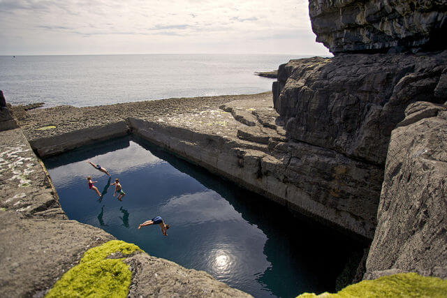
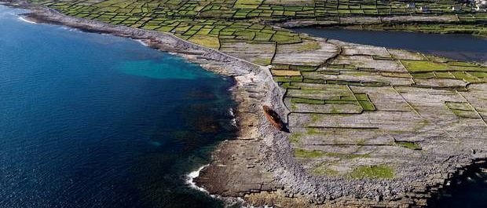
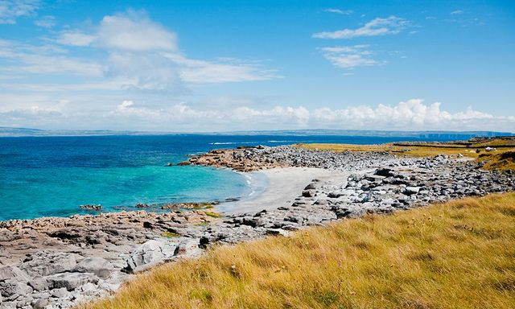

Beautiful Islands On the West of Ireland
The largest of the three Islands
The middle of the three Islands
The smallest of the three Islands
The Aran Islands or The Arans are a group of three islands at the mouth of Galway Bay, off the west coast of Ireland, with a total area around 46 km2.
From west to east, the islands are: Inishmore (Árainn / Inis Mór),[a] which is the largest; Inishmaan (Inis Meáin), the second-largest; and Inisheer (Inis Oírr), the smallest.
The islands are known for their incredible coastlines, beautiful beaches and historical sites and structures. The islands are popular tourist attractions, especially in the summer months.
There is no land access to the islands and there is only two ways you can travel to the Islands, one of which is flying the other is by boat.